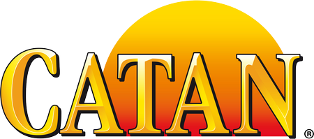
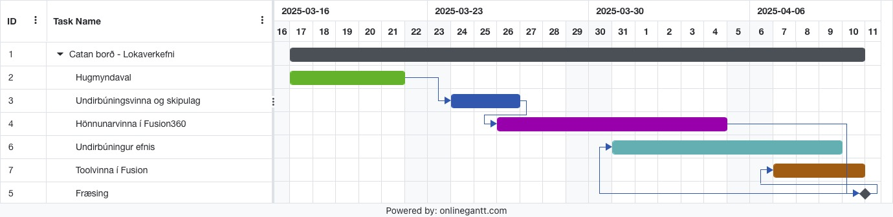

Lokaverkefni - Shopbot fræsing á Catan spilaborði
Höfundar: Guðni Páll Jóelsson, Kári Hólmgrímsson og Óðinn Andrason
Undirbúningur verkefnis
Fyrst og fremst var nauðsynlegt að kynna sér verkefnalýsinguna á uglu. Markmið verkefnisins var að nota Shop-Bot-inn til þess að fræsa hlut úr viði eða vaxmót, einnig má nota aðferðir úr fyrri hluta áfangans líkt og 3D-prentun og laserskurð til þess að bæta verkefnið frekar. Skrásetja þarf speeds, feeds, toolpaths og verkfæri ásamt því að halda vel utan um verkefnið tímalega. Tólin sem notuð voru fyrir verkefnið voru Fusion360, Prusaslicer, Catan borðspilið, Phoenix og Github fyrir vefsíðu, Shop-Bot í Fab Lab-inu og loks nóg af sandpappír. Hönnunarskjölin er að finna á Thangs.
Agile verkefnastjórnun
Gróf tímatafla fyrir skipulag verkefnis var unnin með gantritagerð á netinu og ritið sjálft er að finna hér að neðan.
Gróf verkefnaskipting: Hugmyndavinna - Allir hópmeðlimir koma að brainstormi fyrir verkefnið Undirbúningur og skipulag - Allir koma að undirbúningi verkefnis, sérstök áhersla á skipulag frá Kára. Hönnunarvinna í Fusion - Allir koma að mælingum og pælingum fyrir hönnun verkefnis, sérstök áhersla á hönnun og teikningu í Fusion frá Guðna. Efnisval og vinna - Allir hópmeðlimir koma að verslun og samsetningu efnis. Toolvinna - Allir koma að pælingum hvað varðar undirbúning fræsingar, sérstök áhersla frá Óðni, Fusion vinna frá Guðna. Þétt teymi sem eyðir miklum tíma saman, allir hafa hendur á öllu. Guðni hópstjóri og tekur stórar hönnunarákvarðanir.
Hönnunarferli
Ákveða þarf hvernig verkefni á að vinna, fyrir innblástur voru fyrri vefsíður nemenda skoðaðar. Þó nokkur verkefni voru borð af einhverju tagi og þar sem hópmeðlimir þessa verkefnis spila borðspilið Landnemarnir á Catan reglulega var ákveðið að fræsa borð sem myndi hýsa alla helstu hluta spilsins. Hugmynd var komið á framfæri til leiðbeinanda og samþykkt.
Nú þegar hugmyndin var til staðar mátti leggja grunnvinnuna, mælingar voru teknar og hönnunarkröfur negldar niður. Því næst mátti hefjast handa við að teikna í Fusion. Ýmsar útfærslur urðu til af borðinu og breytingar á stærðum parametra voru tíðar. Til dæmis var borðið fyrst ferningslaga en það er ekki nógu gott þar sem einn leikmaður gæti endað á að þurfa að teygja sig afar langt. Sexhyrningur varð því fyrir valinu og sjá má myndir frá hönnunarferli borðsins hér að neðan.


Hópmeðlimir njóta þess að drekka bjór og þá sérstaklega yfir góðum leik af Catan því var talið nauðsynlegt að vera með dósahaldara á borðinu. Þeir reyndust erfiðari í hönnun en áætlað var, vangaveltur voru um hvort samtvinna ætti fætur borðsins og glasahaldarana, einnig þurftu þeir að geta staflast. Hönnunina er að finna hér að neðan.
Samhliða tölvuteikningunni var unnið í efnisvali fyrir borðið, eftir nokkrar klukkustundir af því að rífa í sundur gamla kassa og að draga út svona 200 nagla var efnið í boði Háskóla Íslands talið ónothæft. Farið var í smá rannsóknarvinnu um sölu viðarplatna á Íslandi var ákveðið að versla 12mm þykka krossviðarplötu úr furu í Bauhaus. Hún yrði svo skorin í tvennt og límd saman, þannig myndi fást 24mm þykktin sem leitast var eftir og nógu stórt yfirborð til þess að vinna með. Platan var versluð og geymd í Vr3 yfir helgi, upp kom þó vandamál þar sem yfir helgi verpist platan talsvert og varð eins og Pringles flaga í laginu. Hönnuðir dóu þó ekki ráðalausir, trélím var verslað í Byko, plöturnar límdar saman og afar þungt hlass lagt ofan á hana í von um að hún myndi réttast af. Tveimur sólarhringum seinna var platan í nothæfu ástandi, sjá má plötuna eftir fræsingu hér að neðan.

Yapppa ummmmmmm toolpaths og speeds og shit ein mynd úr manufacture í fusion less goo

Loks var fátt því til fyrirstöðu að fræsa borðið. Platan var skrúfuð með kúptu hliðina niður á Shop-Bot-inn og forritið sett í gang með aðstoð frá leiðbeinanda. Ferlið átti að virka svona: 6mm flatur biti yrði notaður til þess að fræsa allar brúnir og holur inni á borðinu, 12.8mm v-biti yrði notaður fyrir allan texta og merkingar, 6mm kúlubiti yrði notaður fyrir rúnaðar brúnir og loks aftur 6mm flatur biti til þess að skera út borðið og holur fyrir glasahaldara og fætur. Vandamál sem kom upp við fræsingu var smávægis hliðrun á milli ferla og vegna tímaþrengdar var kúlubitanum sleppt. Síðasta skref verkefnisins var svo að sanda borðið í tætlur og lokaniðurstaðan er afar praktískt og fallegt borð.